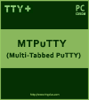

MTPuTTY (Multi-Tabbed PuTTY)
 PuTTY is the most popular SSH client for Windows. One, and probably the only one, of PuTTY drawbacks is that you need to start a new copy of PuTTY every time you open a new connection. So if you need e.g. 5 active connections you run 5 PuTTY instances and you have 5 PuTTY windows on the desktop.
MTPuTTY (Multi-Tabbed PuTTY) is a small *FREE* utility enabling you to wrap unlimited number of PuTTY applications in one tabbed GUI interface. You are still continue using your favorite SSH client, but you are no longer messing around with PuTTY windows - each window will be opened in a separate tab.
MTPuTTY Features
All PuTTY features
Supports all PuTTY protocols - SSH, Telnet, Rlogin, Raw. Supports PuTTY session. You can control and change PuTTY command line parameters. You can run PuTTY configuration from within the program.
Automation
Can automatically login the remote servers and "type" your passwords. Can run any script after login. Can "type" a script in several PuTTY tabs simultaneously.
Easy to use
Clear tabbed user interface. Servers are grouped in a sidebar. Taskbar to quick access to basic program tasks. Any PuTTY tab can be detached and converted into a general PuTTY window.
Smart code
Native Win32 code - no need to have any libraries (like .NET, VB etc). Multithreaded automation tasks - freezing in one PuTTY tab will not freeze the other ones.
FREE OF CHARGE